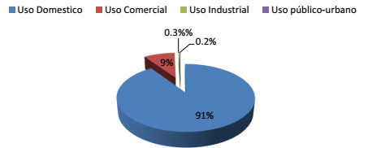
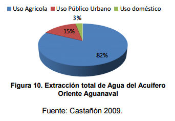

Introducción
La gestión de espacios verdes en las zonas metropolitanas es la solución a problemas de tipo ambiental, perceptual, estético y social.
Por Arq. Daniela Corral
La Zona Metropolitana de la Laguna es una región catalogada como semidesértica, a pesar de esto, debe su crecimiento económico, poblacional y urbano a la explotación de sus mantos acuíferos. Actualmente, se ve reflejado en escasez de agua, la cual no satisface el total de la demanda. La gestión de jardines urbanos se vuelve una necesidad de tipo ambiental y social, sin embargo, estos son consumidores de grandes cantidades de agua.
Se tienen estudios que demuestran que las personas tienden a ser más saludables, más felices y a tener una vida más duradera en áreas con acceso a la naturaleza, incluyendo espacios urbanos con áreas verdes. Los espacios al aire libre son los menos costosos de crear y los que generan la más alta rentabilidad -tomando en cuenta aspectos como la mejora de vida en comunidad, salud y riqueza, además de la generación de actividades económicas en las áreas circundantes.
A pesar de ello, no brindamos a los espacios libres el mismo valor y soporte económico que brindamos a los edificios e interiores. No se cuenta con un análisis de vialidad económica para el diseño de espacios exteriores, cuando podría y debería realizarse.
Ante el argumento anteriormente descrito, se vuelve necesario implementar estrategias específicas para el desarrollo de áreas verdes urbanas en la región, teniendo como objetivo la utilización moderada de recursos hídricos.
La Zona Metropolitana de la Laguna (ZML), conurbación que ante la creciente mancha urbana, la sobreexplotación de mantos acuíferos y el método actual de diseño de áreas verdes basado en el jardín tradicional (con vegetación exótica, grandes extensiones de césped y no toma en cuenta el contexto del lugar), presenta gasto excesivo de agua por irrigación.
El principal uso del agua en la Zona Metropolitana de la Laguna es agrícola, se aprovecha el 91% del agua que extrae la Comisión Nacional del Agua (CONAGUA). De los 2,496 millones de m³ que se aprovecha, el 45% proviene de fuentes subterráneas y el 55% restante de las superficiales. En orden de importancia los otros usos son el público – urbano que demanda el 5%, pecuario 2% e industrial 1%, cuya fuente es exclusivamente subterránea.
A nivel municipio el uso de agua dominante es el agropecuario en 10 municipios, público en Gómez Palacio, Lerdo y San Pedro Las Colonias e industrial en Torreón y Matamoros (Salas-Quintanal, 2011).
El agua se abastece en la Comarca Lagunera mediante diferentes instituciones (dependiendo del municipio que compete), en Torreón el suministro es regulado por el Sistema Municipal de Aguas y Saneamiento (SIMAS), en Gómez Palacio, el organismo que se encarga de suministrar el agua es el Sistema Descentralizado de Agua Potable y Alcantarillado (SIDEAPA), y por último, el Sistema de Agua Potable y Alcantarillado (SAPAL), que es el encargado de suministrar agua en ciudad Lerdo (R. Ayuntamiento de Gómez Palacio 2013-2016, 2013).
La ciudad de Torreón tiene un suministro de agua proveniente de pozos profundos (60 en total). La oferta de agua para la ciudad es de 2,200 litros por segundo aproximadamente, superándose los 70 millones de metros cúbicos al año. Con esto se debería lograr satisfacer la demanda de los usuarios tanto domésticos, comerciales e industriales, así como los usuarios del espacio público. (Comisión Nacional del Agua, 1997)
SIMAS tiene más de 130 000 tomas de agua, de éstas, el 90.6 por ciento es para uso doméstico, 9.0 para uso comercial, 0.3 para uso industrial y 0.2 para uso público-urbano.

Tomas de Agua de la Ciudad de Torreón Coahuila
Actualmente, existe un grave deterioro de parques y jardines en la ciudad de Torreón, por lo que en las últimas administraciones del municipio se gestionó la construcción de espacios urbanos de alto impacto para el esparcimiento social, así mismo, se rehabilitaron diversas plazas públicas ya existentes, de gran importancia para la ciudad. Esta gestión se organizó mediante el programa “Al rescate de Torreón”, que se encuentra en el Plan Municipal de Desarrollo en el apartado Hábitat y Servicios Públicos. (Republicano Ayuntamiento de Torreón, 2009).
En cuanto al sistema de riego y mantenimiento de áreas verdes en la ciudad de Torreón, el mayor consumo de agua por este medio se enfoca a áreas verdes de gran importancia en la ciudad, dichas zonas se dividen en:
- Bosque Venustiano Carranza. Ubicado en las Avenidas Juárez y Cuauhtémoc, es el principal pulmón de la ciudad, y cuenta con servicio de mantenimiento que abarca las funciones de limpieza, poda y deshierbe, mantenimiento en alumbrado, en pintura y mantenimiento en sistema de riego, el cual se basa en el sistema por aspersión desde el año 1991.
- Alameda Zaragoza. Esta plaza se ubica entre las Calles Juárez y Allende, y al igual que el bosque Venustiano Carranza, el sistema de riego para sus áreas verdes es por aspersión, sin embargo, aquí se cuenta con mayor inversión en mantenimiento y limpieza del lugar, al contar con monumentos y fuentes.
- Otros espacios públicos (camellones y corredores urbanos). Bajo la organización del programa de mejoramiento de imagen urbana, el Gobierno del Estado de Coahuila gestionó la construcción de 61 plazoletas y 14 vialidades. En cuanto a las áreas verdes ubicadas en las vialidades de la ciudad, el mayor consumo de recursos hídricos se encuentra en el Periférico Raúl López Sánchez, Boulevard Libertad, Fundadores, Rodríguez Triana, Ramón Méndez, Constitución, Independencia y Diagonal Reforma; realizándose el riego bajo el sistema por aspersión. Además, se llevan a cabo en promedio mensual 100 servicios a plazas y vialidades de riego con camiones cisternas con agua tratada. Actualmente, se invierten aproximadamente 1.7 millones de pesos únicamente en la adquisición de maquinaria para dar mantenimiento a áreas verdes (Municipio de Torreón, 2013).
La ciudad de Gómez Palacio cuenta con 200 mil habitantes, y el suministro de agua para satisfacer las necesidades de la población se realiza mediante la extracción de pozos profundos (34 en total). Se pueden definir claramente tres tipos de consumo doméstico promedio: popular (185 litros), medio (230 litros) y alto (400 litros) (Comisión Nacional del Agua, 1997).
Respecto al gasto de agua para uso público se tiene que en la ciudad de Gómez Palacio se pueden ubicar dos principales sectores para el destino de riego de áreas verdes, éstas son: Parques, plazas y jardines; vialidades, calles y áreas verdes en banquetas. En lo que respecta al riego de parques plazas, parques, jardines y áreas verdes ubicadas en vialidades principales, el riego y mantenimiento corre a cargo del municipio de Gómez Palacio y se utiliza el sistema de aspersión principalmente, en las plazas de las colonias populares se lleva a cabo por medio de la toma directa de agua. Por otro lado, el riego para áreas verdes localizadas en las vialidades principales se realiza mediante el método de camiones cisterna en su mayoría, solamente el boulevard Miguel Alemán cuenta con sistema de riego por aspersión. Finalmente el riego de áreas verdes ubicadas en áreas verdes de banquetas es por parte de usuarios particulares. (R. Ayuntamiento de Gomez Palacio 2013-2016, 2013).
El caso de ciudad Lerdo es similar al de Gómez Palacio, al contarse únicamente con sistema de riego por aspersión en plazas y parques, a nivel de vialidad, muy pocas áreas verdes cuentan con este sistema de riego, utilizándose el sistema de pipas, el cual lo provee el municipio.
Estadísticamente, la cantidad de la extracción de agua del subsuelo que se destina para uso Público Urbano (PU), se estima en casi 10 millones de m3/año, representando un 14.8% de la extracción total. (SEMARNAT, 2013).

Extracción total de Agua del Acuifero Oriente Aguanaval
Para logar el objetivo del ahorro de agua en áreas verdes es muy importante la vegetación, ya que son el elemento que consume agua en un conjunto paisajístico. Se recomienda el uso de aquellas especies mejor adaptadas a las condiciones climáticas del sitio, con un índice amplio de tolerancia a la sequía, cuya variedad de especies es extensa, ya que abarca los especímenes nativos e inducidos.
El uso de especies nativas es muy recomendable, ya que, en esencia, son las mejor adaptadas y resistentes, y por lo tanto, su mantenimiento es mínimo, sin embargo, el mercado y producción de éstas es muy limitada, además, las condiciones del suelo urbano son muy diferentes a las naturales (Xeriscape TM, 1990).
Si no queremos que vuelva a pasar la muerte de árboles como paso con la Helada del 4 de Febrero del 2011 se debe se elegir bien la vegetación y seleccionar el lugar adecuado para su plantación, fomentar el crecimiento de las raíces profundas, de la preparación del suelo y el uso de prácticas de riego adecuadas, algunos de los árboles que no se helaron fueron; palo verde, fresnos, lilas, truenos, mezquites, cedros, jacarandas, huizaches, pirules, pinos, álamos, olivos, moras, algarrobos, ébanos y pingüicas.
Vegetación regional con bajo consumo de agua
La gestión de espacios verdes en las zonas metropolitanas es la solución a problemas de tipo ambiental, perceptual, estético y social. Se deben desarrollar estrategias específicas para el desarrollo de espacios verdes urbanos en un clima semidesértico, con el objetivo primordial de implementar un sistema, en el ámbito de arquitectura de paisaje, que permitiese disminuir el consumo de agua destinada para irrigación de jardines urbanos de carácter público.
Vegetación en Museo del Desierto
Bajo en contexto de escasez de agua, se elaboró una propuesta de intervención paisajista en una sección de camellón, ubicado en el Blvd. Ejército Mexicano, de la Zona Metropolitana de la Laguna. Se plantea que este caso de estudio pueda ser tomado como un modelo de introducción hacia el uso sustentable de los recursos hídricos de la región; y que las estrategias manejadas en la propuesta, puedan establecer los cimientos para un futuro reordenamiento de las áreas verdes públicas de la ciudad. Este trabajo tiene como premisa el poder concebir el desarrollo factible de infraestructura verde, sin que esto conlleve el uso irracional de recursos hídricos. Para poder ver la Propuesta del Proyecto se encuentra en la Tesis de Diseño de paisaje de bajo consumo de agua de la UABC.
Bibliografía
- Tesis de Diseño de paisaje de bajo consumo de agua. Por M. Arq. Soraya Alba Delgado. (Próxima publicación).
- Xeriscape TM, 1990
- SEMARNAT, 2013
- SIMAS
- SIDEAPA
- Salas-Quintanal, 2011
- Comisión Nacional del Agua, 1997